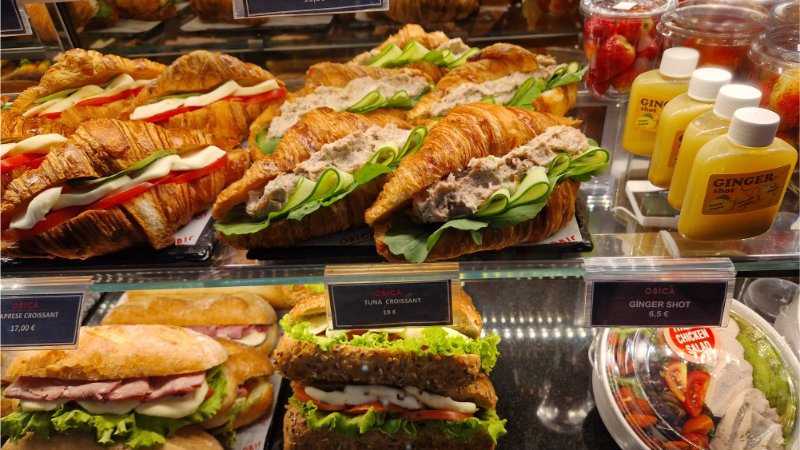

Uzbekistan u sedam dana: putem svile kroz četiri grada i četiri godišnja doba
Naravno da su svi koji ne prate travel influensere imali pitanje: „Šta ćete tamo?“ Od „Nemoj, molim te, ne spominji mi Uzbekistan do polaska“ do povratka sa prepunim koferima i utiskom da smo u sedam novembarskih dana proživele sva četiri godišnja doba. Tako je izgledalo naše putovanje Putem svile od 6. do 12. novembra 2026. kroz Taškent, Samarkand, Buharu i Hivu.
Ako planirate putovanje u Uzbekistan, ovde ćete pronaći pregled našeg sedmodnevnog putovanja, utiske iz četiri grada na Putu svile, iskustva sa prevozom, hranom, smeštajem, kupovinom i cenama. Putovale smo vozom, upoznavale lokalne ljude i otkrivale zemlju koja nas je iznenadila mnogo više nego što smo očekivale. Za svaki grad pripremila sam i poseban putopis sa detaljima i fotografijama.
Uzbekistan za sedam dana: naša ruta
Za sedam dana obišle smo četiri grada i napravile putovanje koje nas je vodilo od savremenog Taškenta do istorijskih gradova na Putu svile. Ovo je raspored našeg putovanja, sa vremenom koje smo provele u svakom mestu.
| Grad | Vreme | Šta smo obišle |
|---|---|---|
| Taškent | 1 dan | Hotel Uzbekistan, Trg nezavisnosti, parkovi, Centar islamske civilizacije, metro, bazar i Magic City. |
| Samarkand | 2 dana | Registan, Šah-i-Zinda, Hazret Hizr džamija, Bibi, Hanim džamiija, Siab bazar, Ulugbekovu opservatorija i Eternal City. |
| Buhara | 2 dana | Stari grad, Labi Hovuz, medresa Nodir Devonbegi, Poi Kalon, Bolo Hauz, Chor Minor, tvrđavu i bazare. |
| Hiva | 2 dana | Itčan Kala, Džuma džamija, Kalta Minor, minaret Islam Hodža, mauzolej i palatu Taš Hauli. |
Nama je ovakav raspored omogućio da upoznamo svaki grad, mada bih Hivi, svom favoritu, rado poklonila još jedan dan.
Taškent: prestonica iznenađenja
Posle sletanja u Taškent dočekao nas je novi nalet adrenalina: blokirana kreditna kartica na automatu, poruka o potrošenom romingu pre nego što sam i pipnula telefon i e-SIM koji jedva proradi. Ali čim smo razmenile prvih sto dolara i u sekundi postale milionerke u uzbekistanskim somovima, Uzbekistan je počeo da nam se dopada.
Taškent, glavni grad Uzbekistana, nas je iznenadio širokim bulevarima, odsustvom grafita, besprekornom čistoćom i belim ševroletima koji suvereno vladaju ulicama. Iznenađene smo i veličinom i sa tri miliona stanovnika. Dok smo šetale pored hotela „Uzbekistan“ i Trgom nezavisnosti, uživale smo okružene zlatnožutim parkovima. Oduševio me je Centar islamske civilizacije, posebno zlatna vrata i plavi ornamenti. Metro stanice su prave podzemne galerije, a mladi u prevozu bez izuzetka ustaju starijima. Čak smo dale intervju dvema studentkinjama o tome kako nam se sviđa Uzbekistan, iako smo tek kročile. Na bazaru su mi se svideli njihovi čajevi, začini, slatkiši i grožđe koje je posebno ukusno. Već tada je bilo jasno da nećemo imati dosta mesta u koferima pri povratku. Uveče smo stigle da obiđemo i Magic City u kom je dvorac kao Diznijev.
.jpg "Centar islamske civilizacije, Taškent")
.jpg "Magic City, Taškent")
Samarkand: plave kupole i nasleđe Puta svile
Iz prestonice smo krenule put Samarkanda, i to biznis klasom običnog, sporog voza, i za svega pet evra razlike dobile smo kožne fotelje koje greju, obaraju se i masiraju. Karte za voz smo kupile dve nedelje ranije na zvaničnom sajtu za uzbekistanske vozove. Karte su oko 25 evra.
Samarkand je veličanstven, grad koji je na Putу svile povezivao Istok i Zapad. Nekadašnja je prestonica Timurovog carstva koja i danas osvaja monumentalnim građevinama i plavim kupolama. Šah-i-Zinda izgleda kao iz bajke, a Registan je jedno od onih mesta koje možete satima da obilazite. Poseban doživljaj bio je večernji svetlosni šou na tom trgu koji možete besplatno posmatrati.
.jpg "Registan, Samarkand")
Posle hladnoće u Srbiji, temperatura je 28 stepeni i veselo nosim haljine. Tu smo na sat vremena postale uzbekistanske princeze u tradicionalnim haljinama i krunama za 50 evra.
.jpg "Uzbekistanske princeze u Samarkandu")
Buhara: grad koji se voli
Buhara je bila sasvim drugačija priča, nisu razbacane grandiozne znamenitosti, a između njih modernije zgrade, nego postoji stari grad gde su na jednom mestu džamije, bazari, medrese. Buhara je intimna, topla, kao scenografija za film. Buhara je ljubavna. Podseća me na Stari grad u Budvi, ne po arhitekturi, već po osećaju. Dok smo uz jezero Labi Hovuz jele ukusni plov za manje od četiri evra, shvatile smo zašto ga zovu „dnevnom sobom“ grada.
.jpg "Buhara, stari grad")
Posle jutarnje drame sa lokalnim taksistom i trčanja za vozom koji nam je pobegao, Buhara nas je nagradila veličanstvenim minaretom Poi Kalon pred kojim se po legendi poklonio i Džingis-kan, drvenim stubovima džamije Bolo Hauz i bakom na pijaci koja mi je u ruku tutnula karamel bombonu uz blagoslov za zdravlje i mladost.
Tu smo videle i veoma neobičan mozaik na ulazu u restoran: ljudske organe za varenje. Moderna umetnost.
Buhara: kroz stari grad na Putu svile – detaljan putopisHiva: moj favorit na Putu svile
A onda, moj favorit Hiva, čiji je stari grad pod zaštitom UNESCO-a, i nagli skok u zimu. Temperatura je pala ispod nule, pa su haljine zamenile tri majice, džemper, duks, jakna, kapa, šal i rukavice, termo dokolenice, helanke, teksas bermude i preko farmerice. Hiva je grad boje peska, kupola i uskih ulica iza moćnih gradskih zidina. Izgleda kao da će svakog časa iza ugla istrčati Aladin sa ukradenom veknom hleba dok ga jure. Na ulicama su tezge sa odećom, suvenirima i keramikom. Savršeno su uklopljene i razne skulpture: od bosonogog dečaka koji jede lubenicu do karavana kamila. Tu je i Džuma džamija iz 10. veka sa preko dvesta drvenih stubova. Simbol Hive je Kalta Minor, nedovršeni minaret koji je trebalo da bude najviši u Centralnoj Aziji. Ako me je Buhara po osećaju podsećala na Stari grad Budva, Hiva me je podsetila na Stari grad Kotor.
.jpg "Hiva, Itčan Kala")
Hivu sam prepešačila najmanje sedam puta, u različito doba dana, od svitanja do noći. Hladnoća me nije zaustavila.
Upoznale smo i Sonju, sedamdesetpetogodišnju prodavačicu sa toplim zagrljajem i zlatnim zubima koji su ovde uobičajeni. Od nje smo kupile čarape od kamilje dlake. Kasnije sam otkrila da na njima piše Made in China, ali su i dalje divne i tople.
U Hivi smo upoznale i petomesečnog dvogrbog kamilčeta Majkla.
Popele smo se četvoronoške na oko 175 strmih, visokih stepenika minareta Islam Hodža i posmatrale Hivu sa visine.
Videle smo muškarce u tradicionalnim nošnjama.
Hiva: grad iza pustinjskih zidina – detaljan putopisPraktični saveti za putovanje u Uzbekistan
Kako se putuje između gradova?
Za obilazak četiri grada koristile smo kombinaciju avio-prevoza i železnice. U Uzbekistan smo stigle u Taškent, a vraćale se iz Urgenča, aerodroma koji se koristi za dolazak do Hive. Iz Taškenta smo do Samarkanda putovale vozom, a karte smo kupile oko dve nedelje unapred na zvaničnom sajtu uzbekistanskih železnica.
Naš izbor bila je i biznis klasa sporijeg voza, za svega pet evra razlike u odnosu na drugu opciju. Iskustvo je bilo prijatno, a sedišta su nas posebno iznenadila. Za planiranje putovanja preporučujem da red vožnje i dostupnost karata proverite unapred, naročito ako imate unapred rezervisan smeštaj i ograničeno vreme u svakom gradu.
Kada je najbolje putovati u Uzbekistan?
Najbolje je na proleće ili na jesen jer su leta pretopla a zime hladne. Mi smo Uzbekistan posetile u novembru. Da li bih vam preporučila novembar? Ne znam. Imale smo nekoliko dana prelepog vremena, kada je temperatura dostizala i 28 stepeni, pa sam šetala u haljinama. A onda je stiglo zahlađenje i Hiva sa temperaturom ispod nule.
Za sedam dana prošle smo od gotovo letnjih temperatura do prave zime. Zato, ako putujete u novembru, nemojte se oslanjati samo na prosečne temperature. Ponesite i laganu odeću i ozbiljnu zimsku garderobu. Nama su se u koferima našli i letnji i zimski komadi, a na kraju su nam svi bili potrebni.
Novac, plaćanje i internet
Zvanična valuta u Uzbekistanu je uzbekistanski som. Menjanje novca nam je omogućilo da već na početku putovanja osetimo koliko je zabavno postati milionerka za nekoliko sekundi. Naše iskustvo sa kursom i menjanjem novca zabeležila sam u cenovniku ispod. Za bazare vam je potrebna lokalna valuta mada neko prima i evre i dolare.
Sa internetom sam imala manje sreće. Poruka o potrošenom romingu stigla je pre nego što sam stigla da koristim telefon, a e-SIM je u početku jedva proradio. Ako planirate putovanje, proverite unapred opcije za internet i roming, jer je praktično imati vezu zbog mapa, komunikacije i naručivanja taksija.
Koliko košta putovanje u Uzbekistan?
Uzbekistan nas je iznenadio i cenama. U restoranima smo pronalazile pristupačna jela, taksi je bio veoma povoljan, a na bazarima je bilo teško odoleti čajevima, začinima, suvenirima i lokalnim proizvodima. Ovo su cene koje smo zabeležile tokom našeg putovanja u novembru 2026. godine. Mogu se razlikovati u zavisnosti od mesta, prodavnice i trenutka kupovine.
- Avionska karta: nešto ispod 600 evra iz Beograda sa presedanjem u Istanbulu za Taškent, povratak iz Urgenča.
- Smeštaj: oko 200 evra za nas četiri za dve noći.
- Činijice: oko 3 evra.
- Štepane jakne: oko 15 evra.
- Magneti: iznenađujuće skuplji, 3–5 evra, mada ima i za 2 evra.
- Hrana i piće: u restoranima ima jela za 4–5 evra, a kafa je 2 evra.
- Čaj na bazaru (100 g): 4 evra.
- Veliki šal: 10–12 evra.
- Taksi (preko aplikacija): 1 do 2 evra.
- Slikanje u haljinama: 50 evra.
- Ulaznice: ulaz u Registan je 8 evra, isto toliko i ulaz u minaret u Hivi.
- Naočare: okviri za naočare 20 evra, dioptrijska stakla 17–20 evra.
- Kurs valuta: 100 evra su menjali za 1.350.000 soma, a 100 dolara za 1.190.000 soma.
Jedna cena koju ne smem da zaboravim
A na aerodromu u Istanbulu: kroasan 19 evra!

Šta smo ponele iz Uzbekistana?
Kući smo ponele svilene i kašmirske marame, čajeve, začine, pekan orahe i makadamije, suvenire sa motivom nara (njihov nacionalni simbol) i uspomenu na ljude koji su nas svuda dočekivali pitanjem jesmo li iz Italije i toplim zagrljajima.
Uzbekistan nam je ponudio mnogo više od monumentalnih građevina, plavih kupola i istorije Puta svile. Pamtim široke ulice Taškenta, raskošni Registan, toplinu Buhare i Hivu koju sam obilazila iznova, čak i na minusu. Pamtim i Sonju, baku sa pijace, Majkla i čarape koje su prešle pola sveta, a ispostavilo se da su iz Kine.
Na pitanje „Šta ćete tamo?“ sada imam mnogo duži odgovor. A možda je najjednostavnije reći: idite i otkrijte sami.